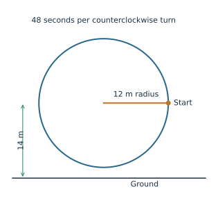
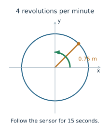

For each situation, identify the quantities, choose a relationship, calculate, and explain whether the result makes sense. Answer all eleven questions.
Your responses are saved on this device as you type.
1. Ferris wheel: where is the rider?
A Ferris wheel has radius 12 m, with its center 14 m above the ground. A rider begins at the rightmost point, level with the center. The wheel rotates counterclockwise at a constant rate and takes 48 seconds per revolution.
For rotation \(\theta\) in radians, the rider’s height is \(h=14+12\sin\theta\) meters.

Determine angular speed in radians per second.
Find the rider’s exact height after 8 seconds and after 12 seconds.
Explain why the height must remain between 2 m and 26 m.
At what time during the first revolution is the rider first at maximum height?
2. A rotating antenna: angular speed and distance
An instrument platform turns at 4 revolutions per minute. A sensor sits 0.75 m from the rotation axis. Find how far it travels along its circular path over 15 seconds, and compare that with its displacement.

Convert the angular speed to radians per second.
How many radians does the platform turn through in 15 seconds?
How far does the sensor travel along its circular path in that time?
Explain why the sensor’s net displacement after 15 seconds may differ from its total distance traveled.
3. A wheel encodes a wave
A recorder copies only the vertical position of a point on a rotating disk to a pen constrained to move up and down in a vertical guide. Paper moves past the guide at a steady speed, so horizontal distance on the paper represents elapsed time.
At a constant rotation rate, the recorded height rises and falls like sine. Use Circle to Wave to follow the coordinate; its horizontal axis is angle, which can be converted to time once the rate is known.
Use the Circle to Wave demo to identify the heights at quarter turns.
Describe the graph produced during two full revolutions.
Explain how increasing rotation speed changes the time between consecutive peaks but does not change the disk radius.
Check your models
Use radians in arc-length formulas. Check the model at the starting time and after one full turn. Explain distance and displacement separately.